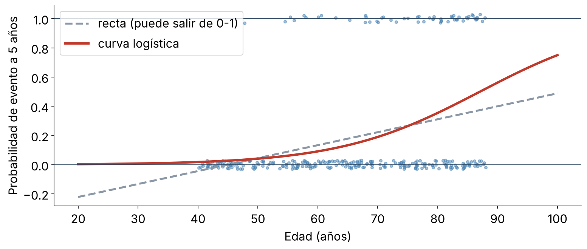
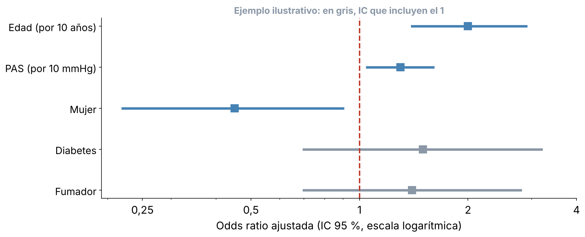
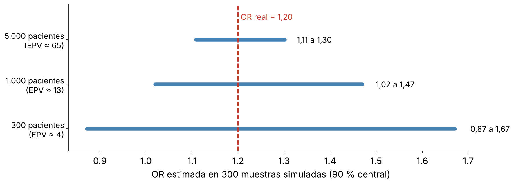
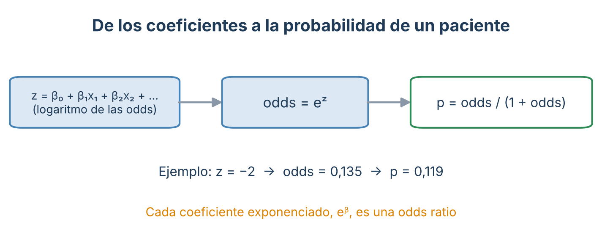

Bioestadística (1964) · Grado en Medicina · Curso 2027-2028
Tema 280Modelo de regresión logística
Módulo 5. Generalización de conclusiones
Evaluación: el examen del Módulo 5 se hace con Colab. Practica ejecutando e interpretando cada análisis.
Fernando Borrás Rocher · Universidad Miguel Hernández de Elche · CC BY 4.0
Objetivos de aprendizaje
Al terminar esta sesión serás capaz de:
- Explicar por qué la regresión lineal no sirve para una variable de respuesta binaria y cómo la resuelve la función logística.
- Ajustar un modelo de regresión logística e interpretar sus coeficientes como odds ratios ajustadas con su IC 95 %.
- Expresar la OR de una variable cuantitativa para un incremento clínicamente útil (10 años, 10 mmHg).
- Calcular con el modelo la probabilidad de un evento para un paciente concreto.
- Valorar si el número de eventos es suficiente para el número de variables del modelo.
Cómo usar esta presentación
Usa el selector de arriba para dar el tema en una sesión completa o en dos sesiones intercaladas.
🎓 Sesión de clase magistral
- 1. Caso clínico de partida 5 min
- 2. Conceptos clave 10 min
- 5. Autoevaluación 5 min
Explica los conceptos, haz la pausa activa y cierra con las ideas clave.
💻 Sesión de Colab
- 3. Demostración: el riesgo cardiovascular de la cohorte 20 min
- 4. Práctica en la app Bioestadística 10 min
- 5. Autoevaluación 5 min
Cada estudiante abre su copia del cuaderno, predice el resultado y después ejecuta la celda.
Teclas: ← → para pasar · N notas del profesor · M cambiar de modo · F pantalla completa · Esc índice.
1. Caso clínico de partida
En el Tema 230 vimos que, en la cohorte, los diabéticos tienen más eventos cardiovasculares a 5 años (OR cruda 1,77). Pero los diabéticos son, de media, algo mayores que los no diabéticos, y la edad es el factor de riesgo cardiovascular más potente. ¿Cuánto de ese exceso de riesgo se debe a la diabetes y cuánto a la edad?
Además, el equipo quiere una herramienta sencilla. Se introducen la edad, el sexo, la presión arterial, el tabaco y la diabetes de un paciente. La herramienta da su probabilidad de evento a 5 años. Es la lógica de las escalas de riesgo como SCORE2 o Framingham.
Las dos tareas se hacen con la regresión logística: estimar efectos ajustados de factores de riesgo y predecir la probabilidad de un evento binario. Es el modelo multivariante más usado en la investigación clínica.
2. Conceptos clave
2.1 Por qué no una recta
Para un evento sí/no: la curva logística

- Una recta puede dar probabilidades negativas o mayores de 1.
- La regresión logística modela el logaritmo de la odds y devuelve probabilidades entre 0 y 1.
2. Conceptos clave
2.2 Los coeficientes son logaritmos de odds ratios
Los resultados se leen como odds ratios ajustadas

- OR > 1: más odds de evento; OR < 1: menos; IC que cruza el 1: no significativa.
- Para variables cuantitativas, OR por un incremento clínico: por 10 años, por 10 mmHg.
2. Conceptos clave
2.3 Cuántas variables caben en el modelo
Pocos eventos por variable: coeficientes inestables

- Lo que limita el modelo es el número de eventos, no el de pacientes (orientación: ≥ 10 por variable).
- Con pocos eventos, la OR estimada varía muchísimo entre muestras y tiende a exagerarse.
Pausa activa
Piensa 30 segundos, comenta con quien tienes al lado y vota.
En una regresión logística, el coeficiente del tabaco es 0,69. ¿Cuál es la OR?
En la sesión de Colab
Lo que acabas de ver se comprueba con datos en el cuaderno del Tema 280.
- Abre el cuaderno y guarda tu copia: Archivo → Guardar una copia en Drive.
- Ejecuta la celda de configuración.
- Ve a la demostración y predice cada resultado antes de ejecutar.
3. Demostración: el riesgo cardiovascular de la cohorte
3.1 La curva logística: edad y evento
▶ En tu cuaderno: 3.1 La curva logística: edad y evento. Antes de ejecutar, escribe qué esperas obtener.
import numpy as np
import pandas as pd
import matplotlib.pyplot as plt
import statsmodels.formula.api as smf
cohorte = pd.read_csv("https://raw.githubusercontent.com/fborrasumh/bioestadistica/main/datos/cohorte_limpia.csv")
cohorte["evento"] = cohorte["evento_cv_5a"]
m_edad = smf.logit("evento ~ edad", data=cohorte).fit(disp=0)
lineal = smf.ols("evento ~ edad", data=cohorte).fit()
x = np.linspace(20, 100, 200)
plt.figure(figsize=(7, 4.5))
plt.scatter(cohorte["edad"], cohorte["evento"] + np.random.default_rng(280).uniform(-0.03, 0.03, len(cohorte)),
alpha=0.25, s=12, label="Pacientes (0 = sin evento, 1 = evento)")
plt.plot(x, m_edad.predict(pd.DataFrame({"edad": x})), color="firebrick", label="Regresión logística")
plt.plot(x, lineal.predict(pd.DataFrame({"edad": x})), color="gray", linestyle="--", label="Recta (inadecuada)")
plt.axhline(0, color="black", linewidth=0.5)
plt.xlabel("Edad (años)")
plt.ylabel("Probabilidad de evento a 5 años")
plt.legend()
plt.show()
print(f"La recta predice a los 25 años una probabilidad de {lineal.predict(pd.DataFrame({'edad': [25]}))[0]:.3f}")Fuera del rango de los datos, la recta predice una probabilidad negativa. La curva logística se mantiene entre 0 y 1 y crece de forma multiplicativa con la edad.
3. Demostración: el riesgo cardiovascular de la cohorte
3.2 La OR de la edad
▶ En tu cuaderno: 3.2 La OR de la edad. Antes de ejecutar, escribe qué esperas obtener.
b = m_edad.params["edad"]
li, ls = m_edad.conf_int().loc["edad"]
print(f"Coeficiente β = {b:.4f}")
print(f"OR por año: {np.exp(b):.3f} (IC 95 %: {np.exp(li):.3f} a {np.exp(ls):.3f})")
print(f"OR por 10 años: {np.exp(10 * b):.2f} (IC 95 %: {np.exp(10 * li):.2f} a {np.exp(10 * ls):.2f})")Cada año multiplica la odds de evento por 1,085; cada 10 años, por más de 2. Expresar la OR por 10 años es más útil clínicamente que por un año. Ojo: la OR por 10 años es $e^{10\beta}$, no 10 veces la OR por año.
3. Demostración: el riesgo cardiovascular de la cohorte
3.3 ¿Diabetes o edad? La OR ajustada
▶ En tu cuaderno: 3.3 ¿Diabetes o edad? La OR ajustada. Antes de ejecutar, escribe qué esperas obtener.
def tabla_or(modelo):
ic = modelo.conf_int()
return pd.DataFrame({
"OR": np.exp(modelo.params),
"IC 95 % inf.": np.exp(ic[0]),
"IC 95 % sup.": np.exp(ic[1]),
"p": modelo.pvalues,
}).drop(index="Intercept").round(3)
cruda = smf.logit("evento ~ diabetes", data=cohorte).fit(disp=0)
ajustada = smf.logit("evento ~ diabetes + edad", data=cohorte).fit(disp=0)
print("Diabéticos: edad media", cohorte.groupby("diabetes")["edad"].mean().round(1).to_dict())
print("\nOR cruda:")
print(tabla_or(cruda))
print("\nOR ajustada por edad:")
print(tabla_or(ajustada))La OR de la diabetes baja de 1,77 a 1,48 al ajustar por edad. Parte del exceso de riesgo de los diabéticos de la cohorte se debía a que eran mayores. Con 48 eventos, el IC sigue siendo muy ancho. No permite confirmar el efecto propio de la diabetes, que en estudios grandes está bien establecido.
3. Demostración: el riesgo cardiovascular de la cohorte
3.4 El modelo multivariante
▶ En tu cuaderno: 3.4 El modelo multivariante. Antes de ejecutar, escribe qué esperas obtener.
completo = smf.logit("evento ~ edad + sexo + fumador + diabetes + pas_mmHg + hdl_mg_dl", data=cohorte).fit(disp=0)
eventos = int(completo.model.endog.sum())
predictores = len(completo.params) - 1
print(f"Pacientes en el modelo: {int(completo.nobs)} · eventos: {eventos} · predictores: {predictores} "
f"· eventos por variable: {eventos / predictores:.1f}")
tabla_or(completo)for variable, k, unidad in [("edad", 10, "10 años"), ("pas_mmHg", 10, "10 mmHg"), ("hdl_mg_dl", 10, "10 mg/dL")]:
b = completo.params[variable]
li, ls = completo.conf_int().loc[variable]
print(f"{variable:>10}: OR por {unidad} = {np.exp(k * b):.2f} (IC 95 %: {np.exp(k * li):.2f} a {np.exp(k * ls):.2f})")Cómo se comunica: «En el análisis multivariante, tres variables se asociaron de forma independiente con el evento cardiovascular a 5 años. Fueron la edad (OR 2,06 por cada 10 años), la PAS (OR 1,55 por cada 10 mmHg) y el sexo masculino (OR para mujeres 0,34)».
Dos advertencias:
- Con unos 7 eventos por variable, el modelo está por debajo de la regla de 10 EPV: los coeficientes pueden estar sobrestimados. La OR de la PAS es probablemente mayor que la real.
- El tabaco o el HDL no salen significativos, pero eso no significa que no sean factores de riesgo. Con 43 eventos, el modelo no tiene potencia para detectarlos.
3. Demostración: el riesgo cardiovascular de la cohorte
3.5 La probabilidad de un paciente
▶ En tu cuaderno: 3.5 La probabilidad de un paciente. Antes de ejecutar, escribe qué esperas obtener.

pacientes = pd.DataFrame({
"edad": [52, 72],
"sexo": ["Mujer", "Hombre"],
"fumador": ["No", "Sí"],
"diabetes": ["No", "Sí"],
"pas_mmHg": [125, 155],
"hdl_mg_dl": [60, 38],
})
pacientes["probabilidad"] = completo.predict(pacientes)
for _, f in pacientes.iterrows():
print(f"{f['sexo']} de {f['edad']} años, fumador {f['fumador']}, diabetes {f['diabetes']}, PAS {f['pas_mmHg']}, "
f"HDL {f['hdl_mg_dl']}: probabilidad de evento a 5 años {f['probabilidad']:.1%}")Es lo que hacen las calculadoras de riesgo cardiovascular. Pero este modelo se ha construido con 358 pacientes y 43 eventos. Y no se ha validado en pacientes distintos de los que se usaron para ajustarlo. Antes de usarlo con un paciente real habría que comprobar su discriminación y su calibración en otra muestra (Tema 290). Las escalas de las guías se han desarrollado con cientos de miles de personas.
Ampliación
Ampliación: el sobreajuste con pocos eventos
Simulamos muchas cohortes de distinto tamaño, todas con una OR real de la PAS de 1,20 por 10 mmHg. Después, vemos qué OR estima el modelo.
rng = np.random.default_rng(seed=280)
def simular(n):
edad = rng.uniform(40, 85, n)
pas = 110 + 0.5 * (edad - 40) + rng.normal(0, 14, n)
logit = -7.4 + 0.07 * edad + np.log(1.20) / 10 * (pas - 120)
evento = rng.random(n) < 1 / (1 + np.exp(-logit))
datos = pd.DataFrame({"evento": evento.astype(int), "edad": edad, "pas": pas})
for _ in range(4): # cuatro variables de ruido, sin relación con el evento
datos[f"ruido{_}"] = rng.normal(0, 1, n)
m = smf.logit("evento ~ edad + pas + ruido0 + ruido1 + ruido2 + ruido3", data=datos).fit(disp=0)
return evento.sum() / 6, np.exp(10 * m.params["pas"])
for n in [300, 1000, 5000]:
resultados = np.array([simular(n) for _ in range(150)])
print(f"n = {n:>4}: eventos por variable ≈ {resultados[:, 0].mean():5.1f} · "
f"mediana de la OR estimada = {np.median(resultados[:, 1]):.2f} · "
f"rango central del 90 %: {np.percentile(resultados[:, 1], 5):.2f} a {np.percentile(resultados[:, 1], 95):.2f}")Con pocos eventos por variable, la OR estimada varía muchísimo de una cohorte a otra. Con unos 4 EPV, una cohorte puede obtener una OR «protectora» de 0,84 y otra una de 1,60. La real es 1,20. Las que salen significativas suelen ser las más exageradas. Con miles de pacientes, se concentra alrededor del valor real (1,20). El tamaño muestral de un modelo se decide antes de ajustarlo.
Ampliación
Ampliación: errores frecuentes
Interpretar la OR como un riesgo relativo cuando el evento es frecuente.
Dar la OR de una variable cuantitativa por unidad cuando la unidad es diminuta (por mg/dL o por año); exprésala por un incremento clínico.
Meter demasiadas variables para los eventos disponibles.
Seleccionar las variables por su significación en análisis univariantes previos. Elígelas por conocimiento clínico.
Usar las probabilidades del modelo en la clínica sin validarlo.
Interpretar las OR ajustadas de un estudio observacional como efectos causales.
4. Práctica en la app Bioestadística
Abre la unidad 280 de la app Bioestadística y completa sus misiones:
- Misión básica (sin asistente): convertir coeficientes en OR, OR por unidad en OR por 10 unidades, y logit en probabilidad.
- Misión clínica (con pistas): estimar la OR del tabaco sobre el evento, cruda y ajustada por edad y sexo, e interpretar el cambio.
- Misión reto (con asistente): pedir al asistente un modelo con todas las variables de la cohorte y calcular los eventos por variable. Proponer un modelo más sencillo, justificado clínicamente.
Al terminar, exporta el informe de la unidad.
5. Autoevaluación
Responde sin asistente.
5. Autoevaluación
Elige una opción: verás la explicación.
En una regresión logística, el coeficiente del tabaco es 0,69. ¿Cuál es la OR?
La OR de la edad es 1,07 por año. ¿Cuál es la OR por 10 años?
¿Qué significa una OR ajustada de 1,48 para la diabetes en un modelo con la edad?
Un modelo tiene 30 eventos y 8 variables. ¿Qué problema tiene?
¿Por qué no se usa la regresión lineal para predecir un evento binario?
Ideas clave
- La regresión logística modela el logit de la probabilidad de un evento binario.
- $e^{\beta}$ es la OR ajustada; para variables cuantitativas, exprésala por un incremento clínico ($e^{k\beta}$).
- El modelo permite estimar la probabilidad de evento de un paciente, pero antes hay que validarlo.
- El número de eventos limita el número de variables (como orientación, 10 eventos por variable).
- Un factor no significativo en un modelo pequeño no queda descartado.
Glosario
| Término | Definición |
|---|---|
| Regresión logística | Modelo para una respuesta binaria que relaciona el logit de la probabilidad con los predictores |
| Logit | Logaritmo de la odds: $\ln(p / (1 - p))$ |
| Función logística | Función que transforma el logit en una probabilidad entre 0 y 1 |
| Odds ratio ajustada | OR de una variable controlando por las demás variables del modelo |
| Eventos por variable (EPV) | Número de eventos dividido por el número de predictores del modelo |
| Sobreajuste | Ajuste excesivo a la muestra, que exagera los efectos y empeora la predicción en datos nuevos |
| Probabilidad predicha | Probabilidad de evento que el modelo asigna a un paciente según sus características |
Para saber más
- Peduzzi P, Concato J, Kemper E, Holford TR, Feinstein AR. A simulation study of the number of events per variable in logistic regression analysis. J Clin Epidemiol. 1996;49(12):1373-1379. doi:10.1016/S0895-4356(96)00236-3
- Riley RD, et al. Calculating the sample size required for developing a clinical prediction model. BMJ. 2020;368:m441. doi:10.1136/bmj.m441
- Sperandei S. Understanding logistic regression analysis. Biochem Med (Zagreb). 2014;24(1):12-18. doi:10.11613/BM.2014.003